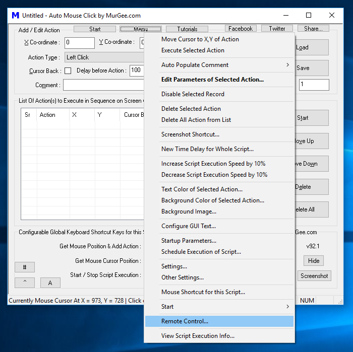
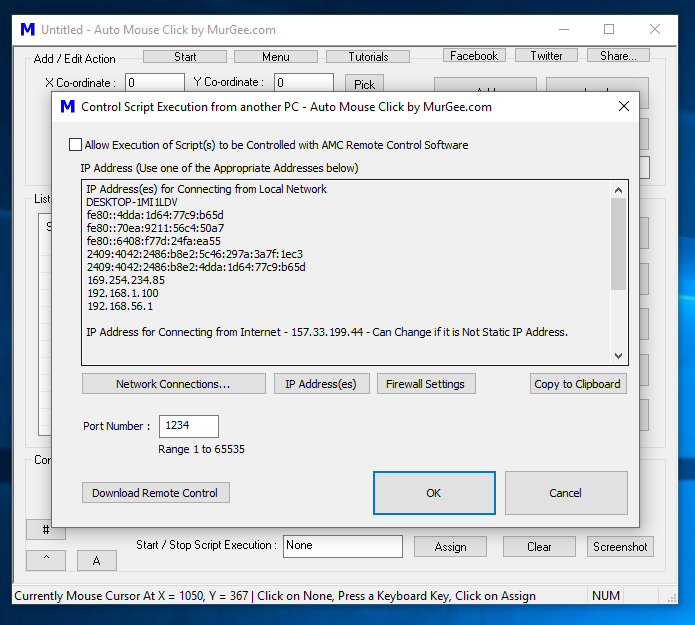
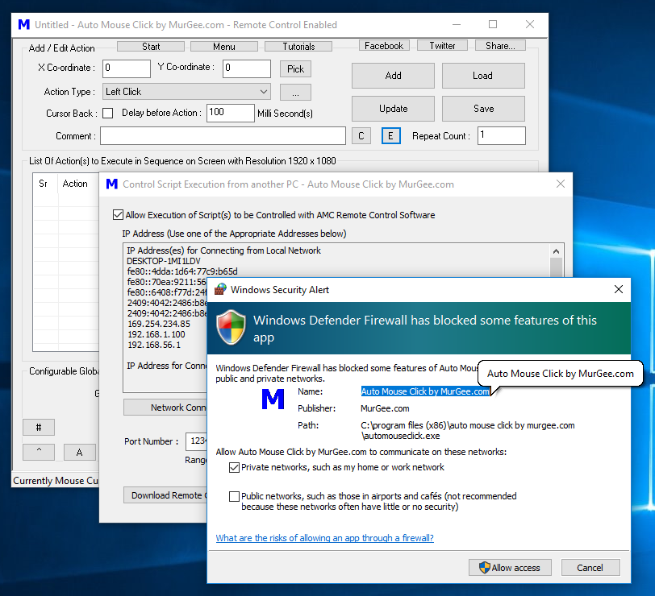
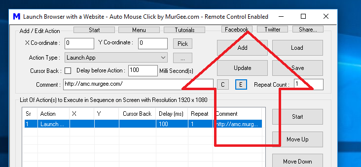
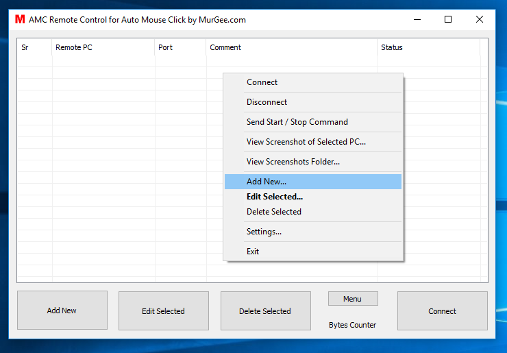
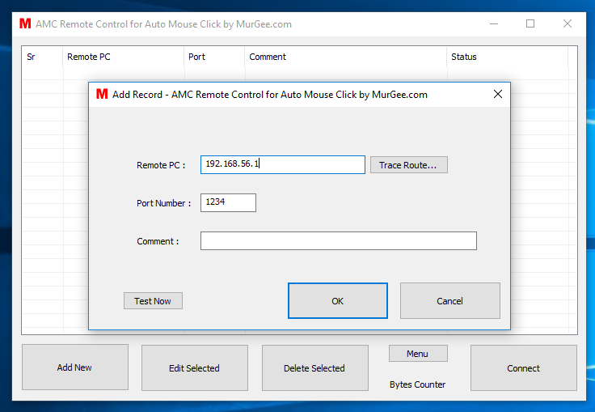
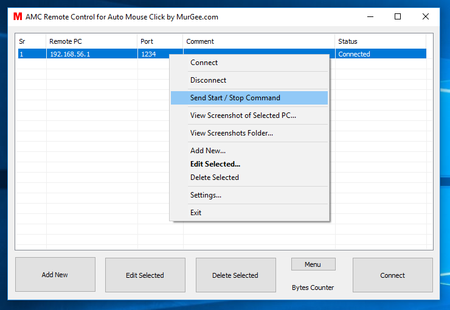

Start / Stop Script Execution of Auto Mouse Click from Internet / Local Network
This Document outlines how you can control Auto Mouse Click Script Execution from another Computer. To get started Click on Menu and then Click on Remote Control to Start the Remote Control Screen. Executing Scripts from another Computer allows you to Automate various Windows Autokmation tasks on another PC controlled by the Remote Control Software. This Remote Control functionality is available Latest Version of Auto Mouse Click Software.

How to Remote Control Auto Mouse Click Script Execution
Given below steps outline the procedure required to be followed to Control Auto Mouse Click Script Execution from another Computer. You can Execute Currently Loaded Script in Auto Mouse Click Software and Get a Screenshot from the Remote Computer. Yes this is not as sophisticated as Remote Desktop Connection, however you can run script on single or multiple computers easily and quickly.
- Launch Control Script Execution Screen from the Menu button as displayed in the Screenshot.
- Enable Remote Control of Auto Mouse Click Software from the Control Script Execution Screen. Note the IP Address and Port Number which is by default 1234 and Click on OK to dismiss the Control Script Execution Screen.
- Use AMC Remote Control Software on the Computer from which you wish to Control Auto Mouse Click Script Execution.
- Run AMC Remote Control Software on the Computer from which you wish to Remote Control Auto Mouse Click Software with the help of IP Address and Port Number noted in Step 2 above.
- Add a new PC in AMC Remote Control Software and then Connect to it. Yes you can even capture a Screenshot of the Compute Running Auto Mouse Click and get it to your Computer easily from the Right Click Menu.
Useful Information to Remote Control Auto Mouse Click Software
Given below is some generic information about Networking with which you can easily understand how Remote Control of Auto Mouse Click works. Yes the Network Information is easy to understand and you can skip reading it if you already know about IP Addres(es) and Ports.

- IP Address : Each Computer is identified on a Network by an IP Address. There are 2 formats of IP Address lablelled as IPv4 IP Address and IPv6 IP Address.
- IPv4 IP Address is basically a 4 byte number seperated by dots. IPv6 IP Address is denoted by 8 groups of hexadecimal quartets separated by colons in between them.
- 127.0.0.1 is IPv4 Address denotes current computer.
- To View IP Address(es) Assigned to your Computer, you can run ipconfig command from Command Line or from the IP Address(es) Button on the Control Script Execution Screen.
- The Control Script Execution Screen displays the IP Address(es) Assigned to your Computer by Local Network and also displays the IP Address assigned by your Internet Service Provider for connecting to Internet.
- To Control Auto Mouse Click Running on a Computer, you need to Enable Remote Script Execution from the Checkbox Provided at the Top of Control Script Execution Screen.
- You can Control Auto Mouse Click Script Execution wih the help of AMC Remote Control Software which can be run from any other Windows Computer.
- To Remote Control Auto Mouse Click Software on Internet, use IP Address assigned by your Internet Service Provider. You would also need to Open the specified Port from your Modem Settings.
Screenshots Display How to Remote Control Auto Mouse Click Software
The Remote Control of Auto Mouse Click works by connecting to another Computer with the help of IP Address and Port Number. You can use any available Port Number in the Remote Control Screen. By default the Port Number 1234 is used, however you can change it if you want.
- Enable Remote Control and Allow Access in Windows Firewall

-
Verify Remote Control is Enabled from Title Bar Text

-
Run AMC Remote Control Software on the Computer from which you wish to Remote Control Auto Mouse Click

-
Add IP Address (of Remote Controlled Computer Running Auto Mouse Click Software) and Port Number (Specified in Auto Mouse Click Remote Control Screen)

-
Connect to Computer Running Auto Mouse Click Software and Remote Control Script Execution or get Screenshot of Remote PC
